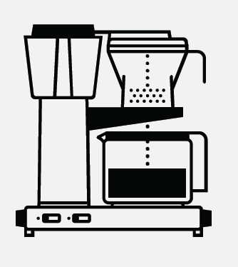
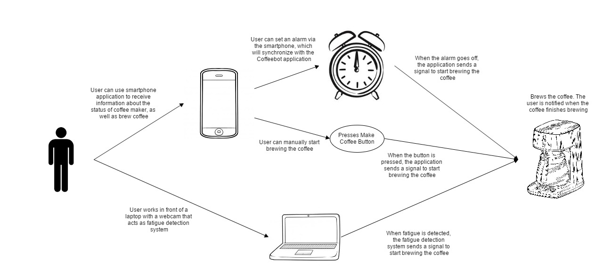
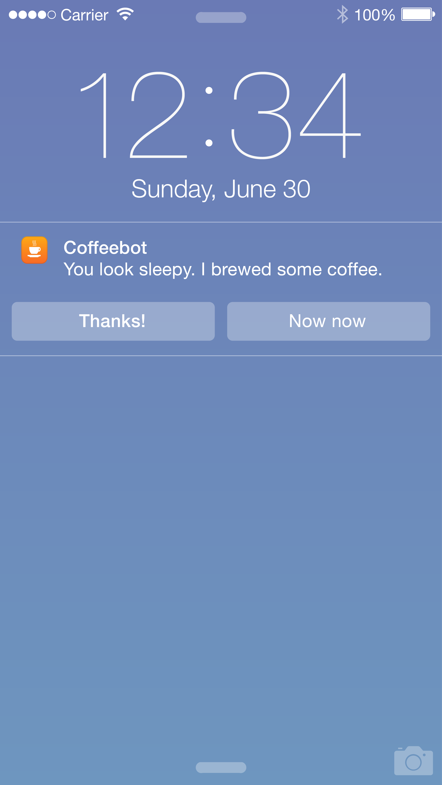
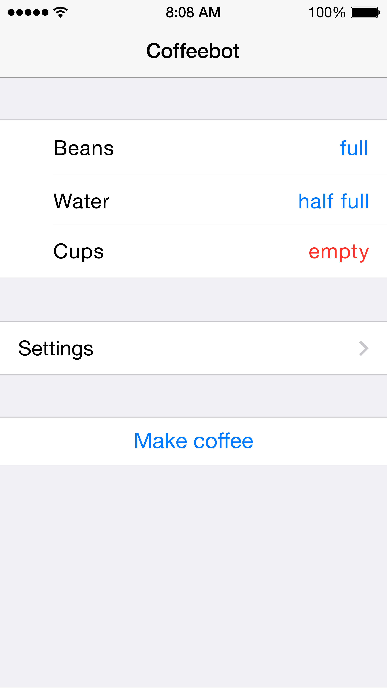

Project Requirement
In my Fundamentals of System Development class, our final project was to design and develop a proposal for an aspect of a smart home. A smart home is automation in homes so that lighting, heating, etc. can be remotely controlled by phone or computer. We worked in teams of 3 to come up with an idea and draft a proposal for it.Proposal
Individuals often stay up late using the help of stimulants such as adderall and caffeine. However, significant mental degradation can occur without the individual’s knowledge, causing them to work with below their maximum efficiency without realizing. We propose Coffeebot, a system that monitors a user’s fatigue to detect when they are likely falling asleep. The system then automatically brews coffee, a popular stimulant, in order to keep the individual awake. The system would also allow a user to brew coffee on other occasions when they might be tired, such as on waking up, and we propose a smartphone application allowing the brewing of coffee at other times, as well.

Stakeholders
UserThe user is the one who owns Coffeebot. Coffeebot’s fatigue detection system will be synced into this user’s laptop camera to detect signs of drowsiness.
Family Member Living in the House
Often times, there will be other family members living with the user. They can also benefit from the system by having readily accessible coffee.
Teammate/Co-worker
A team or a co-worker is someone who is working with the user on projects.
User Stories
- As a user, I want to be able to stay up late at night, so that I can finish all my work
- As a user, I want to be able to have coffee ready whenever I’m sleepy, so that I can avoid falling asleep
- As a user, I want to have coffee ready for me in the morning, so that I can be more awake in the morning
- As a user, I want to be reminded whenever I’m falling asleep, so that I am aware that I need stimulants like coffee
- As a user, I want to have readily brewed coffee whenever I want, so that I have instant access to ready coffee
- As a user, I want to control the coffee maker with my smartphone, so that I can brew coffee anytime anywhere
- As a family member living in the house, I want to have easily accessible coffee, so that I can have coffee whenever I want
- As a teammate or co-worker, I want to ensure the user shows up to work on time, feeling awake, so that we can start our day without waiting for the user being awake
Similar Products
Volkswagen’s Fatigue Detection SystemAn innovative system build in many Volkswagen vehicles to monitor the driver’s conditions when driving for any signs of fatigue.
Volvo Dashboard Sensors
Dashboard-mounted sensors that detect driver’s inattentiveness or fatigue.
Barisieur Coffee Brewing Alarm Clock
An alarm clock that is designed to wake the user up with a cup of freshly prepared coffee.
Tweet-a-Pot
A coffee maker that is remotely controlled via Twitter
Design
The Architecture Model Scenario
John is trying to finish a paper that is due tomorrow. It is 11PM and John is starting to fall asleep. The sensors on John's computer detects that he is tired and automatically brews him some coffee. It displays a notification that alerts John of his coffee.

Coffeebot also automatically sends a notification to John's phone whenenver coffee is ready. In addition, John can also check on the status of materials in coffeebot within its own application so he can add more beans if there are no beans left.


View Deliverable
Year
2014Class
Fundamentals of System DevelopmentDeliverable
View DeliverableTeam Members
- Alex Kim
- Weikun Liang
- Taylor Poulos